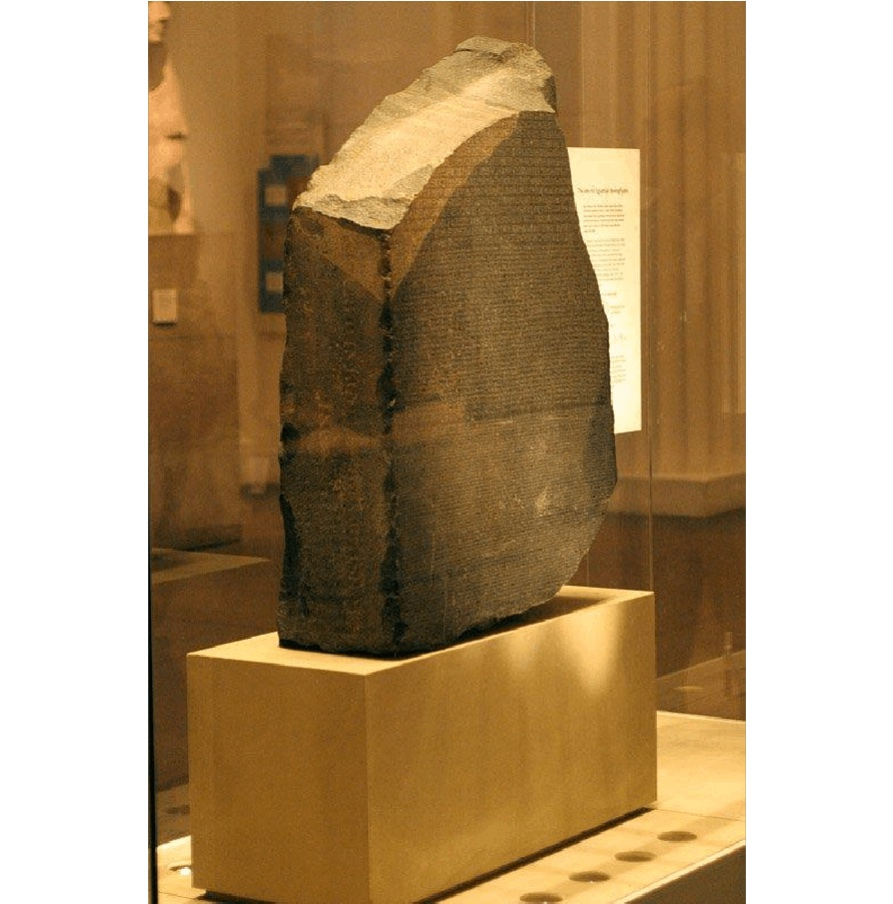
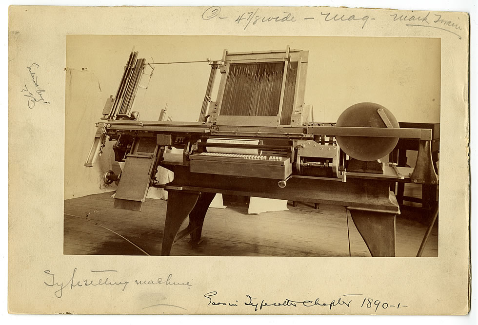
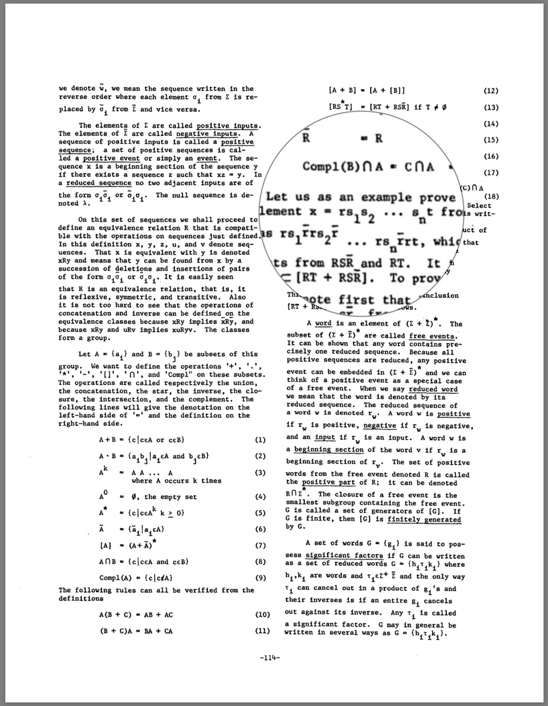
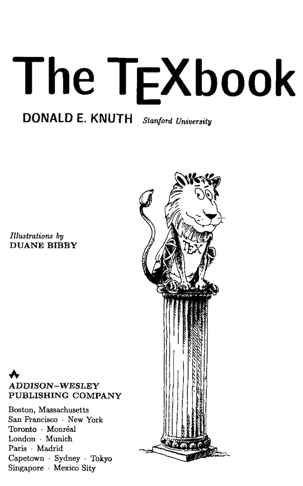
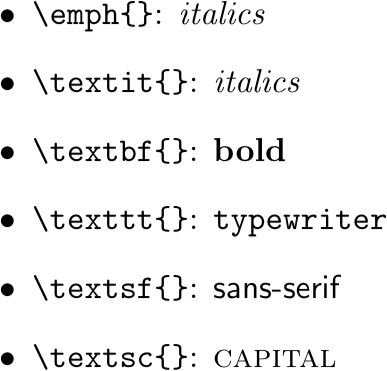
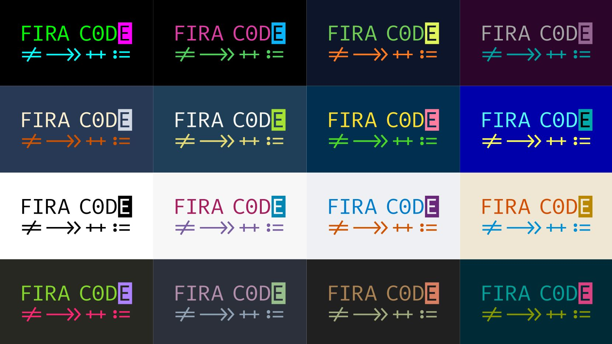
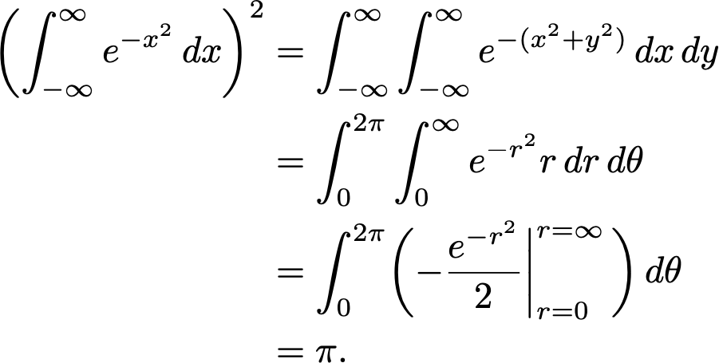
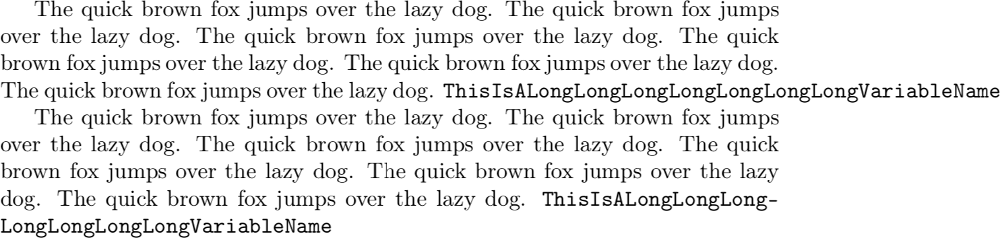
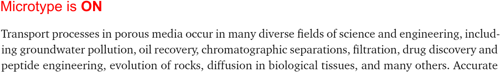

Typesetting with LaTeX
Yanyan Jiang
Overview
Always produce high quality documents
- Characters, words, formulas, paragraphs
- Figures and plots
- Tables
A Brief History of Typesetting
Typesetting in the Pre-Computer Age (1)
By hand, of course

Typesetting in the Pre-Computer Age (2)
Or by a typesetting machine

Typesetting in the Pre-GUI Age (2)

By programming languages!
- troff/nroff (based on runoff)
- translates a document to printer commands
- Example:
\d/\uto move down/up for half lineJan 26\u\s-2th\s+2\d is a sample.
Typesetting Today
PostScript (1984)
- A low-level (assembly) DSL for describing vector drawings
PDF is today's standard
- A supserset of PostScript
- example: page.txt
- A container of fragments
- like MP4
But nobody wants to code in assembly!
What is TeX/LaTeX?

A high-level programming language (and toolchain) for typesetting
- produces a lower-level language (PostScript, HTML, ...)
Less user-friendly (e.g., compared with Microsoft Word)
Better flexibility
Use It Now!
Cloud editors tex.nju.edu.cn or overleaf.com
- The editor supports Vim/Emacs key bindings!
- Let's do it!
Texlive binary
- Binary install package (Windows/macOS)
apt install texlive-full(Linux)
Characters
Fonts
Sans Serif vs. Serif
- Helvetica/Arial/Microsoft YaHei vs. Times/Crimson/SimSun
- Documentary: Helvetica
- In the Web Age
Widely used fonts
- acmart: Linux Libertine
- LaTeX Default: Computer Modern Roman (CMR)
- $\textrm{Computer Modern Roman}$
Font Modifications
When to use them?

Words
Kerning and Ligatures
TeX system has nearly perfect kerning
- The TeXbook; Example: fi/ffi/...
Fixed-width fonts (Fira Code, Cascadia Code, ...)

Formulas
TeX is for Scientists
Beautiful formulas

(Needs a lot of tuning)
Follow Conventions
- $History.append(nextState(currentState));$
- $H \leftarrow H :: \delta(\sigma)$
- follow the natural meanings of symbols
- $\alpha$, $\beta$, $\varepsilon$, ..., $\Delta$, $\Phi$, ...
- $M$, $t$, $\mathbf{X}$, $\mathbb{N}$, $\mathcal{F}$
- $\prec$, $\succ$, ...
- follow the natural meanings of symbols
texdoc symbols
Read (PL) papers carefully
Paragraphs
Word Breaks
Words may not properly break
- Most of the time, use
\- \hyphenation,\babelhyphenationmay be useful- Search the friendly Web

For Those Picky Guys
Use microtype!
- subliminal refinements towards typographical perfection

Quick quiz:
- Use what algorithm to find optimal word wrap?
LaTeX Typesetting: Fun Facts
It's an iterative algorithm
- Each iteration leaves some results (aux, bbl, ...)
- Next iteration uses these results
- e.g., a fresh build has “??” and no references
LaTeX does not guarantee a fixed point
- Table of contents (your thesis)
- blank → correct TOC → correct TOC pages
- There can be documents without a fixed point
Figures and Tables
Why Use Figures?
Help readers understand the flow of (dense) technical contents
- Figures can be non-linear
Tips for figures
Be informative - don't just list a few boxes (text explains this well)
Be self-contained - figures + captions = everything

Why Use Tables?
List a lot of objects
- Experimental subjects, results, ...
Tips for tables
Be readable - use visual signals to help readers identify your message
Be self-contained - same as figures
- (minor) Fine tune your tables
Summary and More Tips
LaTeX is a Programming Language
Write readable code!
- Split code into files
- Use macros
Host your code on Overleaf/Git
- Collaborate with your teammates
There is LaTeX diff
- See how your advisor revise your document
Generate Plain Text
Text is useful to other tools (e.g., Grammarly)
pandoc \ # use another compiler
--wrap=none main.tex -t plain | \
python3 run.py > main.txt
# run.py
import sys, re
print(re.sub(r"\s+([,.])", r"\1", \
re.sub(r"(\s)+", r"\1", \
sys.stdin.read())))
Other Useful Tricks
Command-line tools
- texdoc - manpages
- pdfcrop - very useful when your figures are PowerPoint
- PowerPoint has COM API for automation
Packages
- microtype
- xpsace -
compare \tool{} with...→compare \tool with... - cleveref -
Figure~\ref{fig:example}→\Cref{fig:example} - Any more?